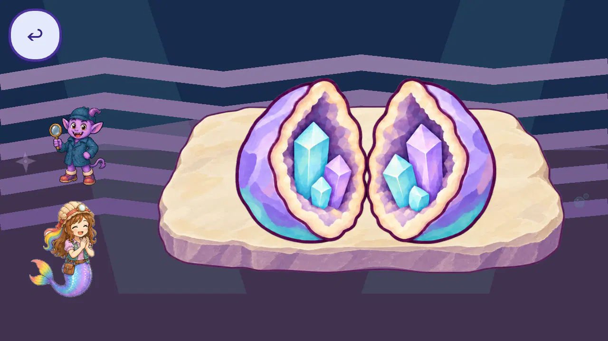

Mermaid Roshan jobs: artwork and action review
This is the working library for the owner’s first-pass audit and reversible refinement of job training and in-world activities. Every opinion applies to its named source, mounted object or relationship. Scores at or below 4.5/5 remain refinement priorities. The comprehensive final report and owner acceptance are still open.
The geode opens to show the crystals inside
The painted specimen opens into two stone halves, revealing cyan and violet crystals rooted inside the cream cavity rims. The current normal Library route, four intentional tasks, earned celebration and actual Library return were inspected at 1280 and 1600 pixels: 317 consecutive frames, 58 native stills, 37 complete boards and eight native details.
Read every current geode evaluation and view all captured artwork · Exact scores and hashes.

Complete current captured gameplay canvas. The rooted specimen is improved; flat room graphics and remote actor contact remain visible priorities.
| Individual use | Artwork | Mounted opinion |
|---|
| Library crest | 4.5 | 4.5 |
| Closed invitation | 4.5 | 4.5 |
| Opened celebration specimen | 4.6 | 4.2: unsupported placement |
| Existing developer menu | 4.6 | 4.6 |
Opening: 4.5 provisional; rooted crystals: 4.6. Remaining named priorities: room 2.8, hand/tool contact 2.7, trays and flat crystal formation 2.9, celebration composition 3.3, fossil clearing 3.9, panning action 3.8 and return caption 4.0.
Current unmodified full regression suite is running on 373 frozen literal source files.
The first suite passed 81 of 82 probes and exposed the crest-location contract failure. Its unchanged probe and failed evidence are preserved. The second attempt uses a crest-family AtlasTexture metadata copy with the exact same painting and crop; no probe was relaxed. Preserved first failure · Current suite receipt.
All known job images and individually addressable regions
Browse the searchable illustrated register: 1,726 entries covering 1,245 unique source files, 328 pose cells, 49 runtime prop regions and 104 source-object regions. There are 676 known source/cell/region priorities across 547 unique source files; 385 source-file opinions remain unassigned. Three additional current geode mounted uses remain priorities.
These counts include shared dependencies, unbound candidates and preserved rejected attempts. They do not establish exhaustive mounted use or approval of every activity. Each report records its actual coverage and remaining evidence.
After game developments, run python -B audit/job_artwork_refinement_live/review_tools/refresh_current_job_review_v31.py, then reload the register. Source or binding changes withhold affected current claims while retaining earlier written opinions.
Doctor and nursery washing: complete sequence audit
Every preserved Doctor 1280 training frame: all 256 frames directly inspected. Complete workflow 2.7, spatial contact 2.3, embodied washing subject 2.2 and basin artwork 2.9. The far-right basin is disconnected from Roshan’s left-side medical invitation; progress graphics do not visibly rub, rinse or end with matched clean hands.
All seven remaining preserved washing routes: 1,818 frames now reviewed. With the separate Doctor report, all 2,074 frames of all eight dated cases are directly reviewed. Nursery has no visible washing subject (1.5/5); Doctor contact and action remain weak. Current-source capture, washing repairs, later phases and owner acceptance remain open. Earlier pending counts remain dated history.
Earlier sources, iterations and reports
Earlier drafts retain their original source boundary and scores. Newer current-use evidence above supersedes dated “current” labels inside these historical reports.